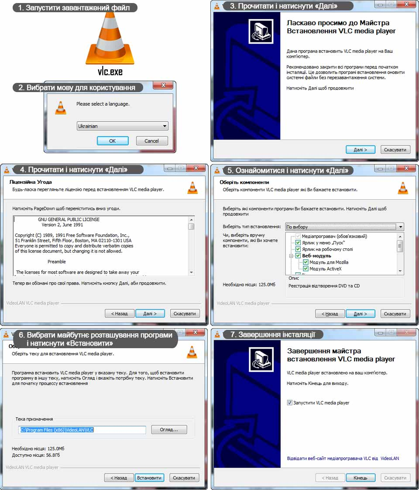
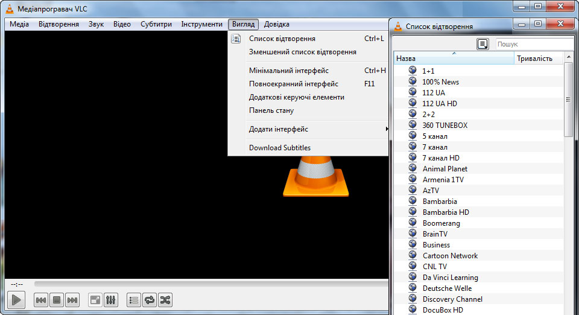

097 921 65 22
097 921 65 22- 097 812 80 28
 099 495 15 35
099 495 15 35
097 921 65 22097 812 80 28099 495 15 35IPTV ( Internet Protocol Television ) - це сучасна технологія , що дозволяє ефективно передавати телевізійний сигнал
через мережу Інтернет . На відміну від таких традиційних видів цифрового телебачення як ефірне , кабельне або
супутникове . IPTV - це повністю інтерактивний сервіс , що функціонує в Інтернеті .
Перегляд IPTV може здійснюватися як на комп'ютері , так і на телевізорі. У разі перегляду на комп'ютері необхідно
встановити додаткове програмне забезпечення , а саме VLC media player. При перегляді на телевізорі необхідно
придбати додаткове обладнання - IPTV - приставку. Телевізори зі SMART функцією мають можливість отримувати IPTV
без IPTV - приставки.
Переваги IPTV перед звичайним кабельним ТБ:
Або за URL-адресою:
Для перегляду Простір-IPTV на комп'ютері необхідно завантажити та встановити VLC media player:
Для початку натиснути на верхній панелі кнопку "Медіа". Потік IPTV телебачення можна відкрити двома способами:
Для того щоб відкрити перелік каналів, натиснути у верхньому меню кнопку "Вигляд", далі у випадаючому меню
вибрати: "Список відтворення", або просто натиснути на клавіатурі комбінацію "Ctrl+L":
